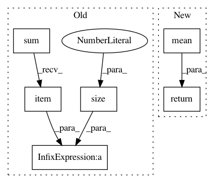

776f891afa3e7bfe2ae456c064e0867c4987c762,examples/rgcn.py,,test,#,42
Before Change
model.eval()
out = model(data.edge_index, data.edge_type, data.edge_norm)
pred = out[data.test_idx].max(1)[1]
acc = pred.eq(data.test_y).sum().item() / data.test_y.size(0)
return acc
for epoch in range(1, 51):
After Change
def test():
model.eval()
pred = model(data.edge_index, data.edge_type).argmax(dim=-1)
train_acc = pred[data.train_idx].eq(data.train_y).to(torch.float).mean()
test_acc = pred[data.test_idx].eq(data.test_y).to(torch.float).mean()
return train_acc.item(), test_acc.item()
for epoch in range(1, 51):
loss = train()
In pattern: SUPERPATTERN
Frequency: 3
Non-data size: 6
Instances
Project Name: rusty1s/pytorch_geometric
Commit Name: 776f891afa3e7bfe2ae456c064e0867c4987c762
Time: 2020-06-30
Author: matthias.fey@tu-dortmund.de
File Name: examples/rgcn.py
Class Name:
Method Name: test
Project Name: rusty1s/pytorch_geometric
Commit Name: 17aafdea24122bbb777f71a8ea7c2505e3fee84c
Time: 2019-03-15
Author: matthias.fey@tu-dortmund.de
File Name: torch_geometric/nn/models/autoencoder.py
Class Name: GAE
Method Name: reconstruction_loss
Project Name: rusty1s/pytorch_geometric
Commit Name: 7ef82e2daa1939d10320a6f326826a68add2182d
Time: 2021-03-15
Author: matthias.fey@tu-dortmund.de
File Name: torch_geometric/utils/homophily.py
Class Name:
Method Name: homophily